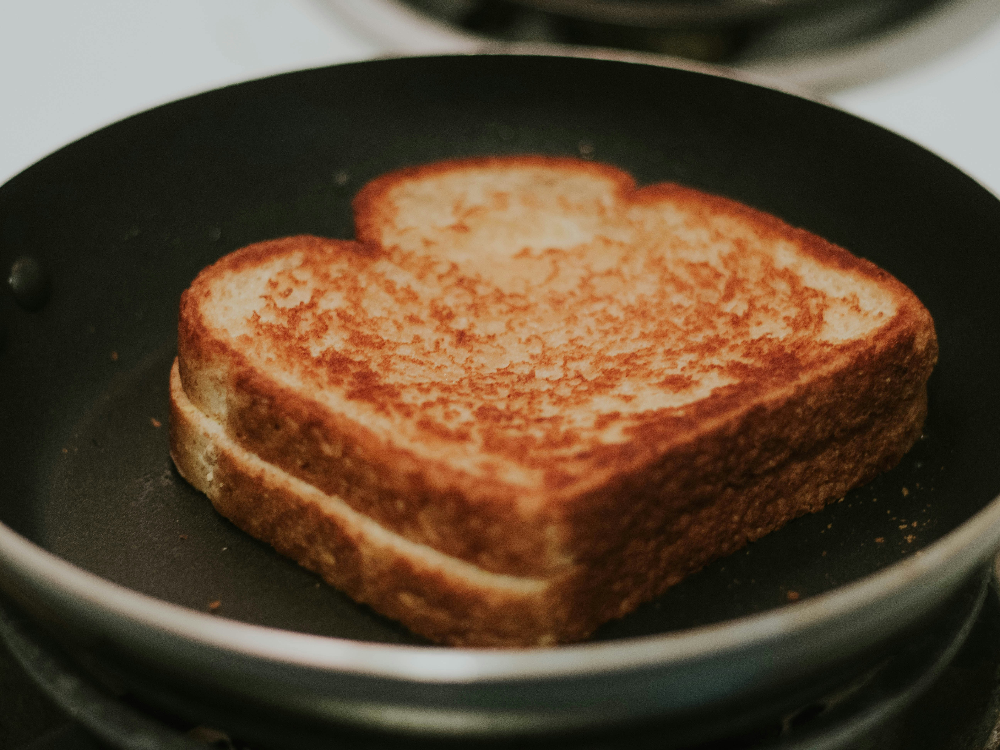

Home
Grilled Cheese

Photo by Gio Bartlett on Unsplash
Ingredients
- 4 slices white bread
- 3 tablespoons butter, divided
- 4 slices cheddar cheese
Steps
- Preheat a nonstick skillet over medium heat.
- Butter one side of each slice of bread.
- Place one slice of bread in the hot skillet, butter side down. Top with two slices of cheese.
- Place one slice of bread on top of the cheese, butter side up.
- Cook until lightly browned on one side, flip and continue cooking until both sides are browned and cheese is melted.
- Repeat steps 2-4 with the remaining bread and cheese slices and serve.